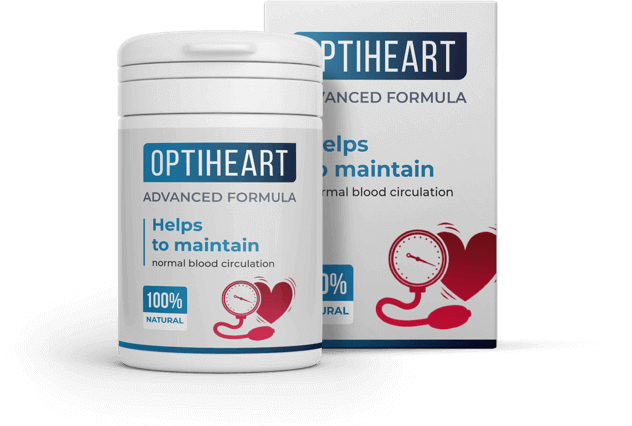

Os serviços governamentais relatam diariamente que as listas de medicamentos escassos estão a aumentar pedindo para procurar analógicos no estrangeiro ou na Internet, uma vez que os fornecimentos não serão restaurados tão cedo.
Contactámos o centro de cardiologia do país para obter os seus conselhos sobre como lidar com pessoas com hipertensão em tal situação. Um importante cardiologista respondeu-nos:
"De facto, o problema da escassez de drogas tornou-se tangível. Cada vez mais pessoas são internadas em hospitais com crises hipertensivas, pré-choque, tensão arterial e sintomas semelhantes. Quando tomamos um historial médico, apercebemo-nos de que o paciente ou não tomou medicação ou tomou medicação de baixa eficácia, basta colocar análogos".
Até a situação do país em termos de medicamentos melhorar, as pessoas sofrerão cada vez mais de doenças cardiovasculares. A doença pode começar com os sintomas mais inócuos, tais como
- apatia
- vertigens
- insónia
- inchaço dos membros
- falta de ar
Depois a tensão arterial começa a subir, o cérebro pode ter espasmos, e o ritmo cardíaco torna-se irregular. Sem a medicação, há 90% de hipóteses de acabar numa cama de hospital.
Os médicos, percebendo a complexidade da situação no mercado farmacêutico, começaram a procurar medicamentos para ajudar as pessoas com doenças cardiovasculares por conta própria. A busca tem sido bastante difícil, por exemplo, há situações em que há interrupções no fornecimento de medicamentos causadas por problemas logísticos. Neste caso, embora o titular da licença por grosso não tenha o medicamento, as farmácias têm-no em quantidade suficiente, pelo que os residentes não sentem esta escassez até que um novo lote de medicamentos seja entregue. Há também menos problemas quando há um número suficiente de outros medicamentos do mesmo ingrediente activo no mercado - neste caso, o medicamento defeituoso é facilmente substituído por outro.
No segundo semestre deste ano, a procura por cardiologistas foi bem sucedida e eles importaram um lote de droga , que tem sido um sucesso retumbante noutros países, mas que não foi importado para o nosso.
A preparação combate com sucesso a hipertensão, purificando os vasos sanguíneos e reforçando as suas paredes. Todas as toxinas são eliminadas naturalmente sob a influência do , a droga tem um forte efeito, mas não causa quaisquer efeitos secundários.
As pessoas que tomaram o medicamento dizem que é muito mais eficaz em comparação com os representantes das farmácias, ao mesmo tempo que tem um preço razoável.
H tem uma composição completamente natural, a sua acção reside em ingredientes activos concentrados que actuam no local. Devido aos ingredientes únicos na sua composição, é altamente eficaz e não tem análogos no mundo.
Não é possível comprar nas farmácias - isto deve-se ao decreto das autoridades, de não conceder uma licença de farmácia. Mas o Centro de Cardiologia do país tomou conta das pessoas e organizou as vendas na Internet. É possível encomendar no sítio oficial de vendas.
Hoje, o centro dá um desconto de 50%, tem a oportunidade de comprar o medicamento inovador com um bom desconto, poupando o seu dinheiro. Coloque a sua encomenda no site oficial agora mesmo, o número de pacotes com desconto é limitado!
Comentários
Obrigado! O artigo é muito interessante. Já fiz a minha encomenda de .
Já comprei e experimentei o ". Há 7 anos que sofro de tensão arterial elevada. Já não me lembro dos tempos da minha vida em que tinha tensão arterial normal. Por recomendação do meu médico, decidi que tinha de limpar os meus vasos. Após um mês de tratamento com ", a minha tensão arterial voltou ao normal. Passaram agora 2 meses desde que já não tenho tensão arterial elevada. A minha vida é agora diferente. Sinto-me mil vezes melhor. Recomendo este excelente produto a todos.
Obrigado. Já o encomendei. Gosto do facto de eles entregarem à sua porta.
Também me tratei durante um mês com o ". Sinto-me mais saudável e mais forte. Sinto-me mais jovem
O pacote chegou ontem. Vou fazer o tratamento de limpeza com a minha mulher. Fizemos alguns testes recentemente e os resultados dizem que os nossos vasos estão obstruídos com colesterol.
Comecei o tratamento com a " há um mês atrás. Por vezes, tinha a tensão arterial elevada e batimentos cardíacos irregulares. Estou a utilizá-lo há 2 semanas. A minha tensão arterial está de volta ao normal. Sinto-me completamente saudável.
Obrigado! Vi um programa de televisão onde se falava deste produto. Todos os médicos o recomendaram. Disseram que a limpeza dos vasos sanguíneos é absolutamente necessária para todos.
Tenho 61 anos de idade. Há 5 anos que faço tratamentos para limpar os meus vasos. Eles ajudam-me a manter a minha saúde e dão-me força. Não tenho nenhuma doença, embora muitos dos meus amigos já tenham falecido. Ainda tenho relações sexuais, é absolutamente necessário limpar os vasos sanguíneos!
Há dois meses, completei também o tratamento de limpeza . Quando tinha entupido os vasos, sentia-me sempre muito cansado, mas agora tenho muita energia. Faço mais durante o dia. Costumava ter dores de cabeça más, agora elas desapareceram. Também durmo melhor. Só por precaução, encomendei mais algumas caixas. Obrigado!
Que bom remédio! Todo o meu corpo doeu. As minhas costas, o meu lado esquerdo, as minhas articulações não se mexiam bem. A minha tensão arterial estava a subir como o inferno. Como se estivesse a viver no inferno. Tomei muitas pílulas. Depois ouvi falar de " e da limpeza dos vasos sanguíneos. Após 3 semanas, senti-me muito melhor. Agora estou a concentrar-me na minha saúde, talvez viva um pouco mais! Muito obrigado!
O médico diz a verdade sobre a ". Eu sou um dos que já tentaram o remédio. Há 7 anos que sofro de tensão arterial elevada. Estava pronto para tomar comprimidos toda a minha vida, mas depois do curso " a minha tensão arterial deixou de subir de todo.
Obrigado pelo ". Experimentei-os, senti um grande alívio. Veremos o que acontece dentro de uma semana. Mas a pressão já não salta, já nem sequer a sinto, por isso acho que tudo vai correr bem!
Agradeço-vos muito a informação sobre este remédio. Há muito tempo que ando à procura de algo assim, estou ansioso pelo meu pedido! Obrigado!
Arrisquei e não me arrependo. Se tiver problemas com óculos, recomendo-o. Não vi efeitos secundários, e fiquei contente com o resultado.
Encomendei o ". Espero que o medicamento funcione realmente. Tenho 64 anos de idade e estou a cair aos bocados. Li muito sobre a limpeza dos vasos sanguíneos. Eu próprio quero experimentar.